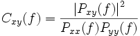

Kohärenz kann folgendermaßen definiert werden:

wobei das Kreuzleistungsdichtespektrum zweier Signale ist, x und y, während und die Leistungsspektrumsdichten von x bzw. y sind.
Kohärenz ist eine Funktion der Häufigkeit, die den Grad der linearen Abhängigkeit zweier Signale misst, indem getestet wird, ob sie ähnliche Häufigkeitskomponenten enthalten. Die Werte der Kohärenz reichen von 0 bis 1. Bei einer gegebenen Häufigkeit werden die zwei Signale als einander perfekt entsprechend betrachtet, wenn die Kohärenz gleich 1 ist. Umgekehrt deutet eine Kohärenz, die gleich 0 ist, darauf hin, dass die Signale bei dieser Häufigkeit absolut keine Verbindung haben.
Für die Berechnung wird das Signal in mehrere Abschnitte für die Häufigkeitsanalyse mit Hilfe von FFT heruntergebrochen. Aneinandergrenzende Abschnitte können sich überlappen und dabei helfen, die gemeinsam genutzten Häufigkeiten abschnittsübergreifend zu erkennen. Die Größe der FFT-Abschnitte, Fenstertyp und -größe und die Anzahl der überlappenden Datenpunkte können das Ergebnis beeinträchtigen. Diese Auswahl sollte entsprechend der Art der Eingabesignale getroffen werden.